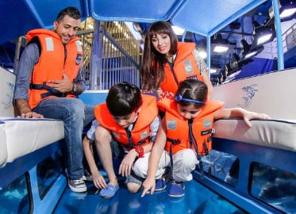

<!DOCTYPE html>
<html lang="en">
<head>
    <meta charset="UTF-8">
    <meta name="viewport" content="width=device-width, initial-scale=1.0">
    <title>Document</title>
</head>
<body>
    
</body>
</html>
<style>
ul{
    list-style-type: none;
    padding: 15px;
    margin: 0px;
    background-color: black;
    overflow: hidden;
    
}
a{
    color: antiquewhite;
    width: 150px;
    font-size: 25px;
    font-weight: bold;
    text-decoration: none;
    padding: 10px;
    display: block;
    text-align: center;
    border-right: 2px dashed;

}
a:hover{
    background-color: navy;
}
li{
    float: left;
}
h1{
    color: antiquewhite;
    text-align: center;
    font-size: 75px;
}
body{
    background-color: black;
}
h2{
    color: white;
    text-align: center;
    font-size: 40px;
}
p{
    font-size: 25px;
    text-align: center;
}
a {
text-decoration: none;
display: inline-block;
padding: 8px 16px;
}

a:hover {
background-color: #ddd;
color: black;
}

.previous {
background-color: #f1f1f1;
color: black;
}

.next {
background-color: #04AA6D;
color: white;
}

.round {
border-radius: 50%;
}
</style>
<body>
    <body>
        <header>
            <ul>
               <li> <a href="Home Page.html" target="_blank">Home</a> </li>
        <li> <a href="Visit Us.html" target="_blank"> Visit us </a> </li>
       <li>  <a href="Explore Aqua.html" target="_blank">Explore Aqua </a> </li>
       <li><a href="Experiences.html" target="_blank">Experiences</a> </li>
        <li> <a href="Education.html" target="_blank">Education</a> </li>
       <li> <a href="Aqua Mall.html" target="_blank">Aqua Mall</a> </li>       
            </ul>
        </header>
            <h1> Animal Encounters</h1>
            <br>
            <h2>
               "FEEDING PRESENTATIONS"
            </h2>
            <h2>
                        
                        <br>
        
        <p>Daily Presentations
            <br><br>
 Amazing sights from one of the largest aquarium windows on the planet.
       <br><br>
    Ray Feeding
    <br><br>
    Watch these graceful creatures fly through the water and eat from our Diver’s hands.
Daily Ray Feeding at 10:30 am.
       <br><br>Shark Feeding
       <br><br>
       Dinnertime at the Aquarium is never dull. Every day at 2 pm*, Our team of Divers dive into our 10-million liter tank and feed our resident Sharks. <br>Don’t try this at home! Make sure you purchase your Aquarium Tunnel ticket for the best vantage point 11 meters under the surface!
       *timings subject to change  
        <br><br>
        Animal Presentations
        <br><br>
        Our experienced Educators are positioned throughout Aqua Marine to answer any of your questions.<br>
         Regular presentations and feedings are conducted daily with our Otters at 02:30 pm and Piranhas at 02:45 pm. *Timings are subject to change.
        <br><br>Glass-Bottom Boat Rides<br><br>
        Experience a breath-taking view of the deep through our Glass-Bottom Boat rides at Aqua Marine .<br>
         You and your friends can ride on the surface of the world’s largest suspended tank containing 10 million liters of water.Enjoy a bird’s eye view of over 33,000 aquatic animals, featuring over 70 species, including sharks and rays! All you have to do is sit back, relax, and enjoy your guided tour.<br><br>
        For Glass-Bottom Boat Rides, make your way to Underwater Zoo on Level 2. Rides depart every 10 to 20 minutes. <br>
        <br>With a capacity of 10 people per boat, departure times are subject to availability.<br>
        *Children under 2 years old and pregnant ladies are not permitted to ride the Glass-Bottom Boats. 
<br>
<br>

        <a href="animal4.html" class="previous">&laquo; Previous</a>
        <a href="Experiences.html" target="_blank" class="next">Next &raquo;</a>
        
        </p>
            </h2>
        
